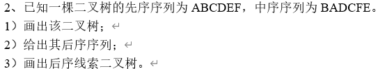
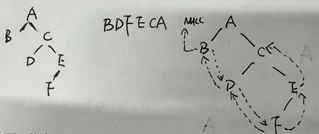
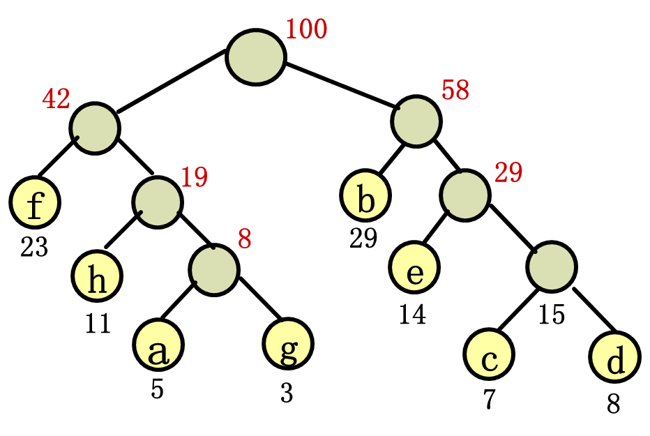

数据结构不是有手就行（陈述句
数据结构没有很多题目，所以只能通过知识点为索引进行复习
知识点来源是学长给的文档和期中考试题目
树的遍历
前序遍历 根->左子树->右子树
中序遍历 左子树->根->右子树
后序遍历 左子树->右子树->根
差异：访问到根节点的条件
已知先序序列和中序序列求树

解题步骤：
- 从前序遍历的第一个节点找到根节点
- 在中序遍历中找到这个根节点，根节点左侧的部分是左子树，右侧的部分是右子树
- 根据分割出的左右子树，在前序遍历中找到相应的部分（保持顺序），递归重复前两个步骤直到完成树的构造
已知中序序列和后序序列求树
解题步骤：
- 从后序遍历的最后一个节点找到根节点
- 在中序遍历中找到这个根节点，根节点左侧是左子树，右侧部分是右子树
- 根据分割出的左右子树，在后序遍历中找到相应的部分（保持顺序），递归重复前两个步骤直到完成树的构造
后序线索二叉树
后序线索二叉树是一种特殊的二叉树，它在普通二叉树的基-础上，通过为二叉树的结点增加“线索指针”来优化树的遍历效率
这种线索指针的引入，使得二叉树的后序遍历可以在不使用递归或栈的情况下完成
简单的来说，线索化就是把X序序列转成双向链表的形式（如果已有一条边，则无需返程）

哈夫曼树和哈夫曼编码
哈夫曼树是一种带权路径长度最短的二叉树，构造基于贪心算法
其中，权值为节点的频率（或权重），路径长度为根节点到某个节点的路径中边的数量，带权路径长度为路径长度乘以节点的权值
哈夫曼树的目标是让带权路径长度（WPL）的总和最小
特定：没有任何一个权值小的节点比权值大的节点更靠近根的位置
树的构造
- 初始化：将每个权值看作一个独立的节点，每个节点都是一棵单结点树
- 选择最小的两个权值：从当且森林中找到两个权值最小的树作为左右子树构造一个新树，新树的根节点权值为这两棵树权值之和，删除旧树
- 重复步骤，直到森林中只剩下一棵树
哈夫曼编码
是一种可变长度的编码方案，基于哈夫曼树生成
- 无前缀性：没有一个编码是另一个编码的前缀，确保了解码的唯一性
- 长度与频率相关：频率高的字符使用较短的编码，频率低的字符使用较长的编码
- 权重分配：从根节点开始，左子树路径赋值为0，右子树路径赋值为1；到达叶子结点时，记录从根到该节点的编码
例题：某通讯系统只使用8种字符a、b、c、d、e、f、g、h，其使用频率分别为0.05, 0.29, 0.07, 0.08, 0.14, 0.23, 0.03, 0.11，利用赫夫曼树设计一种前缀编码

1 | a: 0110 |
保证所有节点都是叶节点即可避免前缀冲突性（每个字符路径唯一，而且没有叶节点在另一个叶节点路径上）
图相关
邻接矩阵：就是个二维数据
邻接表：就是个链表
极大联通子图（强联通分量）：该子图是G连通子图，将G的任何不在该子图中的顶点加入，子图不再连通；用于缩点
极小联通子图：该子图是G 的连通子图，在该子图中删除任何一条边，子图不再连通；用于生成树
强连通图：任意两个点之间有双向可抵达的通路
最小生成树
Prim算法
选择已知树上的最小边并加入
- 从任意一个顶点开始，将它加入生成树
- 每次选择一条权值最小、且值连接生成树中顶点与生成树外顶点的边
- 重复步骤2，直到生成树包含图中的所有顶点
Kruskal算法
选择最小边并判断是否成环
- 将所有的边按边权从小到大排序
- 从权值最小的开始，逐条简称该边是否成环（并查集）
- 如果不成环，则加入生成树
- 如果形成环，则跳过这条边
- 重复步骤2，直到生成树包含n-1条边
二叉排序树
见二叉平衡树一章
排序
这么难我都看不懂
本博客所有文章除特别声明外，均采用 CC BY-NC-SA 4.0 许可协议。转载请注明来源 coperlm's Blog！
相关推荐
.gif)
2025-01-06
红黑树学习
BST 二叉查找树 -> AVL 平衡二叉树 -> RBT 红黑树 二叉查找树 左子树上所有结点的值均小于或等于它的根结点的值 右子树上所有结点的值均大于或等于它的根结点的值 左、右子树也分别为二叉排序树 理想情况下是这样子 存在的问题：如果BST树的节点正好从大到小的插入，此时树的结构也类似于链表结构，这时候的查询或写入耗时与链表相同，最坏时间复杂为线性 这时候就有了平衡二叉树AVL（发明者名字简写） AVL也属于二叉搜索树的一种，与其不同的是AVL通过机制保证其自身的平衡 平衡二叉树 AVL树是最先发明的自平衡二叉查找树 在AVL树中任何节点的两个子树的高度最大差别为1，所以它也被称为高度平衡树 增加和删除可能需要通过一次或多次树旋转来重新平衡这个树 平衡二叉树的特性 对于任何一颗子树的root根结点而言，它的左子树任何节点的key一定比root小，而右子树任何节点的key...
.gif)
2025-01-06
计算机网络有手就行诶我手呢
计算机网络刷题记录 考虑电路交换的三个阶段 建立连接：$s$（题干给出） 数据传输：$\frac{x}{b}$（报文长度除以数据率就是所有报文都传输过去所需要的时间） 连接释放：$kd$（连接释放的报文直接发送，从发送端到接收端所需要的时间为链路段数乘以每段的传播时延） 分组交换 报文如果直接传输，需要的代价是 $\frac{x}{b}$ 但是第一个报文未接收完成，后面的节点都是不在工作的，所以这里的代价为空闲的链路数乘以分组除以数据率 $(k-1)\frac{p}b$ 加上个倾斜，也就是加上 $kd$ 要使分组交换比电路交换快，则： s+\frac{x}b+kd>\frac{x}b+(k-1)\frac{p}b+kd即 $s>(k-1)\frac{p}b$ 考虑原始的状态 $\frac{x}b+(k-1)\frac{p}b+kd$ 没有传播时延，再考虑分组控制信息固定长度，则 $\frac{x}p\cdot\frac{p+h}b+(k-1)\frac{p+h}b$ 整理得 $\frac{k-1}b...
评论
WalineDisqus
.gif)
.gif)
.gif)
.gif)